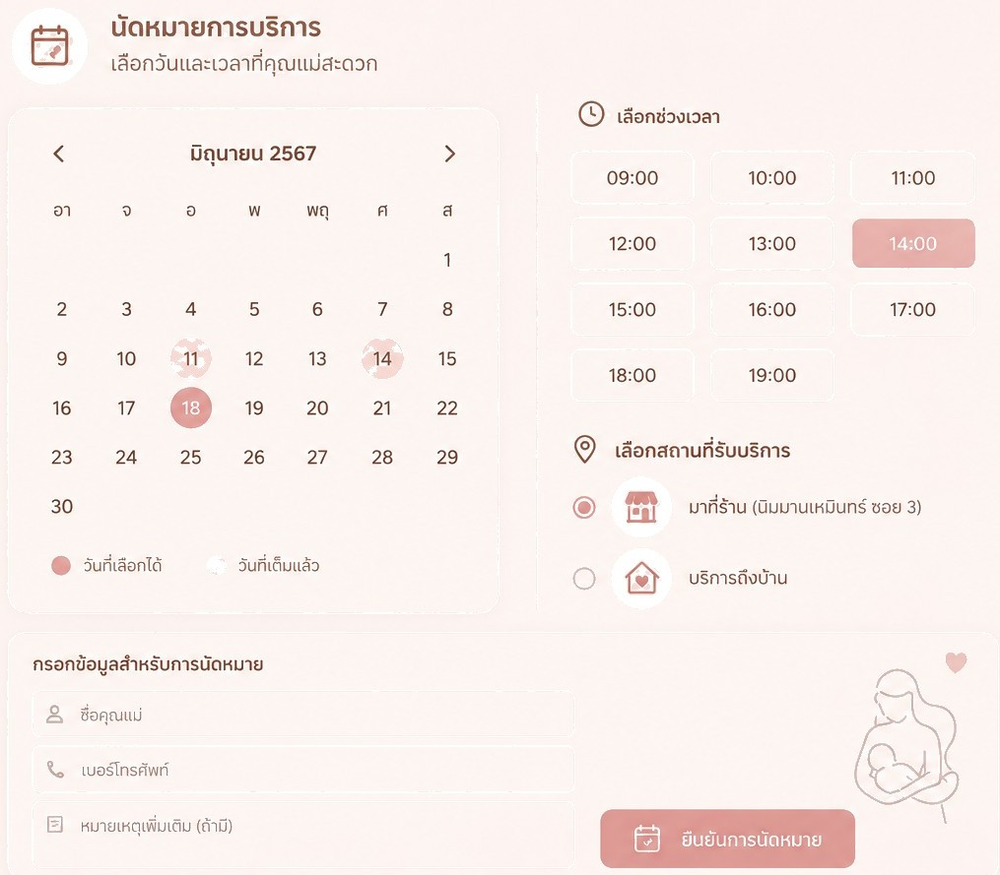
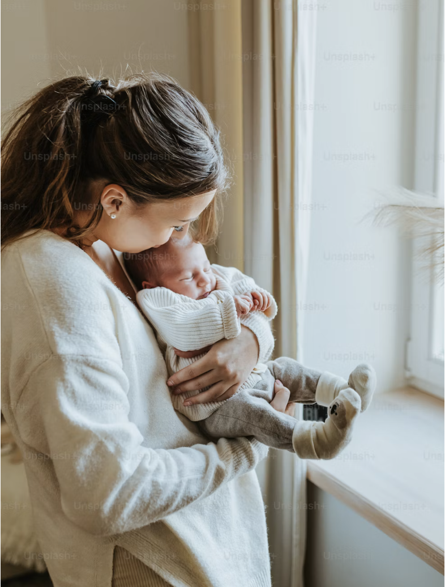

นวดเปิดท่อน้ำนม
แก้ปัญหาท่อน้ำนมอุดตัน เต้านมคัดตึง ด้วยเทคนิคนวดอ่อนโยน ช่วยให้น้ำนมไหลคล่อง
บริการนวดเปิดท่อน้ำนม กระตุ้นน้ำนม และดูแลคุณแม่หลังคลอด โดยผู้เชี่ยวชาญที่เข้าใจหัวใจคุณแม่ ปลอดภัย สะอาด บริการทั้งหน้าร้านและถึงบ้าน
4.9/5 · จากคุณแม่กว่า 800+ ท่านที่ไว้ใจ
ของคุณแม่รู้สึกผ่อนคลายและคลายกังวลขึ้น หลังเข้ารับการดูแลกับเรา
ของคุณแม่ที่ท่อน้ำนมตันมีอาการดีขึ้น ตั้งแต่การดูแลครั้งแรก
ของคุณแม่ให้นมลูกต่อได้อย่างน้อย 3 เดือน หลังปรับการดูแล
คะแนนความพึงพอใจ จากคุณแม่ที่ใช้บริการกับเรา
เราออกแบบทุกบริการให้อ่อนโยน ปลอดภัย และตอบโจทย์ปัญหาน้ำนมของคุณแม่แต่ละท่าน
แก้ปัญหาท่อน้ำนมอุดตัน เต้านมคัดตึง ด้วยเทคนิคนวดอ่อนโยน ช่วยให้น้ำนมไหลคล่อง
สำหรับคุณแม่ที่น้ำนมน้อย ช่วยกระตุ้นการสร้างน้ำนมให้เพียงพอต่อความต้องการของลูกน้อย
บรรเทาอาการเต้านมเป็นก้อน อักเสบ ด้วยการประคบร้อน-เย็นและนวดสลายอย่างถูกวิธี
ผ่อนคลายกล้ามเนื้อ ลดอาการปวดเมื่อย ฟื้นฟูร่างกายคุณแม่หลังคลอดให้สดชื่น
ศาสตร์ดูแลหลังคลอดแบบไทย ช่วยให้มดลูกเข้าอู่เร็ว ขับน้ำคาวปลา และผ่อนคลาย
ให้คำแนะนำท่าให้นม การเก็บน้ำนม และแก้ปัญหาการเลี้ยงลูกด้วยนมแม่แบบตัวต่อตัว
เราเข้าใจว่าช่วงหลังคลอดคือช่วงเวลาที่บอบบางที่สุด ทุกสัมผัสของเราจึงมาพร้อมความใส่ใจและความปลอดภัย
ทีมงานผ่านการอบรมและมีประสบการณ์ดูแลคุณแม่มากกว่า 800 ท่าน
ไม่ต้องเดินทาง เราไปดูแลถึงที่ในเขตเชียงใหม่ สะดวก ปลอดภัยสำหรับคุณแม่และลูกน้อย
อุปกรณ์สะอาดได้มาตรฐาน เทคนิคนวดที่อ่อนโยน ไม่ทำให้เจ็บ
หลังบริการยังให้คำปรึกษาผ่านไลน์ ติดตามอาการจนคุณแม่มั่นใจ

ทักผ่าน Facebook หรือ LINE เล่าอาการเบื้องต้นให้เราฟัง ทีมงานจะช่วยแนะนำบริการที่เหมาะกับคุณแม่มากที่สุด โดยไม่มีค่าใช้จ่ายในการปรึกษา

ขั้นที่ 2เลือกได้ว่าจะมาที่ร้านหรือให้เราไปดูแลถึงบ้าน นัดวันและเวลาที่คุณแม่สะดวกที่สุด ยืดหยุ่นได้ตามตารางของครอบครัว
ผู้เชี่ยวชาญดูแลคุณแม่อย่างอ่อนโยนและปลอดภัย พร้อมให้คำแนะนำการดูแลตัวเอง และติดตามอาการต่อเนื่องผ่านไลน์จนคุณแม่มั่นใจ
รวมรีวิวจากเพจและคุณแม่ที่มาใช้บริการจริง
“ท่อน้ำนมตันมา 3 วัน เต้านมคัดจนไข้ขึ้น พอได้พี่เค้ามานวดให้ น้ำนมไหลเลยค่ะ หายปวดทันที ประทับใจมากๆ”
“น้ำนมน้อยมากจนเครียด มาคอร์สกระตุ้นน้ำนมได้ 2 ครั้ง น้ำนมเพิ่มขึ้นชัดเจน พี่เค้าใจดีให้คำแนะนำตลอดเลย”
“เรียกบริการถึงบ้าน สะดวกมากไม่ต้องพาลูกออกไปไหน สะอาด นวดเบามือ ไม่เจ็บเลย จะแนะนำเพื่อนๆ ต่อค่ะ”
“ทับหม้อเกลือหลังคลอดกับที่นี่ ตัวเบาสบายมาก มดลูกเข้าอู่ไว หน้าท้องยุบเร็ว ดูแลดีเหมือนญาติเลยค่ะ”
“เต้าเป็นก้อนแข็งจนกลัวจะเป็นฝี รีบมาให้ช่วยสลายก้อน หายปวดหายบวมภายในวันเดียว ขอบคุณมากค่ะ”
“ชอบตรงที่ปรึกษาได้ตลอดหลังนวด มีอะไรทักไลน์ถามได้เลย ดูแลใส่ใจจริงๆ ประทับใจสุดๆ”


“Lactation Wellness” เริ่มต้นจากความเข้าใจว่าช่วงหลังคลอดคือช่วงที่คุณแม่ต้องการการดูแลมากที่สุด ทั้งร่างกายและจิตใจ เราจึงตั้งใจสร้างพื้นที่ที่อบอุ่นและปลอดภัย เพื่อให้คุณแม่ทุกคนได้พักและฟื้นฟูอย่างแท้จริง
ด้วยประสบการณ์ดูแลคุณแม่ในเชียงใหม่มากว่า 8 ปี เราผสมผสานศาสตร์การนวดแผนไทยกับความรู้ด้านการเลี้ยงลูกด้วยนมแม่ เพื่อให้ทุกการดูแลเห็นผลจริงและอ่อนโยนที่สุด
พื้นที่ที่ออกแบบมาเพื่อให้คุณแม่รู้สึกสบายใจในทุกช่วงเวลา
เราใช้เทคนิคที่อ่อนโยน เน้นให้คุณแม่ผ่อนคลาย โดยทั่วไปจะรู้สึกตึงเล็กน้อยในจุดที่อุดตัน แต่ไม่เจ็บรุนแรง และอาการจะดีขึ้นทันทีหลังน้ำนมไหล
โดยเฉลี่ยประมาณ 45–90 นาที ขึ้นอยู่กับบริการและอาการของคุณแม่ ทีมงานจะประเมินและแจ้งให้ทราบก่อนเริ่มทุกครั้ง
มีค่ะ เราให้บริการถึงบ้านในเขตเชียงใหม่และพื้นที่ใกล้เคียง สะดวกสำหรับคุณแม่ที่ไม่สะดวกเดินทาง (อาจมีค่าเดินทางตามระยะทาง)
ยิ่งเข้ารับการดูแลเร็วยิ่งดี เพื่อป้องกันการอักเสบหรือเต้านมเป็นฝี หากมีไข้ เต้านมแดงร้อน หรือเป็นก้อนแข็ง แนะนำให้ทักมาปรึกษาทันที
ราคาขึ้นอยู่กับบริการที่เลือก เรามีทั้งแบบครั้งเดียวและแบบคอร์ส ทักแชทมาเพื่อรับใบเสนอราคาและโปรโมชั่นล่าสุดได้เลยค่ะ
ทักผ่าน Facebook หรือ LINE หรือกรอกแบบฟอร์มจองคิวด้านล่าง ทีมงานจะติดต่อกลับเพื่อยืนยันวันเวลาโดยเร็วที่สุด
ให้การเลี้ยงลูกด้วยนมแม่เป็นเรื่องที่อุ่นใจ ทักหาเราวันนี้เพื่อรับคำปรึกษาเบื้องต้นฟรี
จองคิวเลยทิ้งข้อมูลไว้ให้เรา แล้วทีมงานจะติดต่อกลับเพื่อยืนยันคิวและให้คำแนะนำเบื้องต้น หรือทักหาเราได้โดยตรงตามช่องทางด้านล่าง